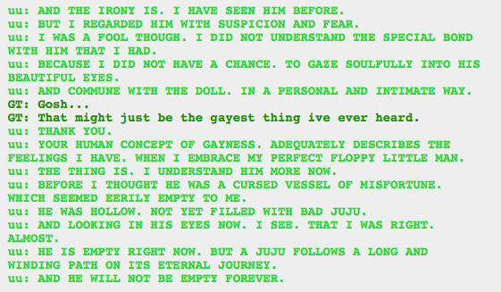
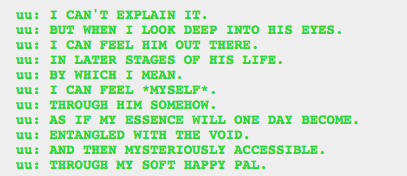
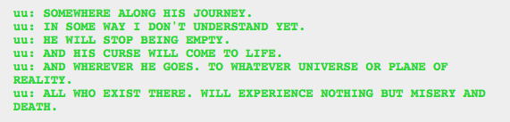

Well that’s seriously fucking creepy.
But I wonder how Caliborn could perceive emptiness in Lil Cal when Dirk had him. Obviously Caliborn is eventually going to put a curse in him, and send him to Dirk and/or Dave, however that ended up working, so wouldn’t the curse already be in Lil Cal? Or does it keep emptying out and having to be refilled?
Fucking confusing time loops.